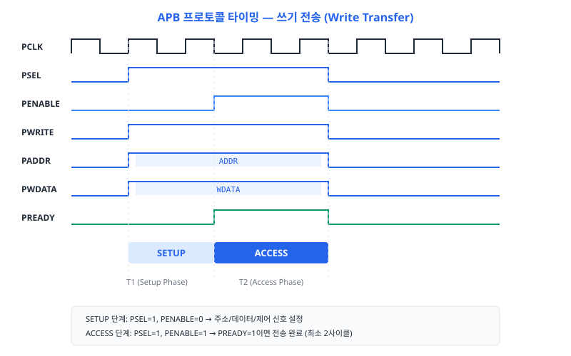
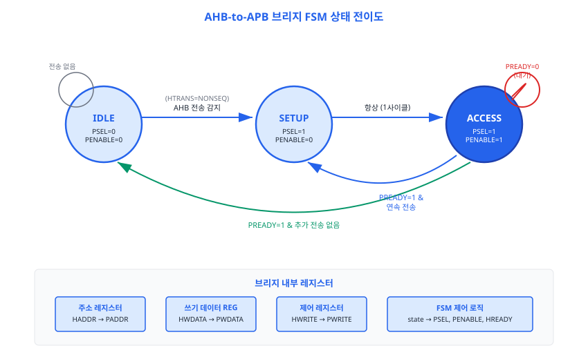
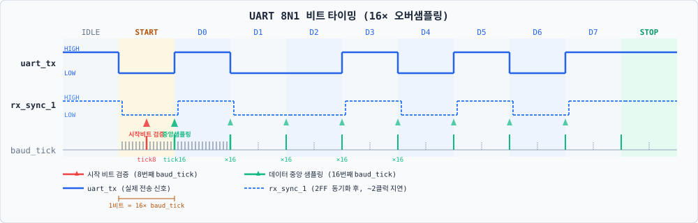
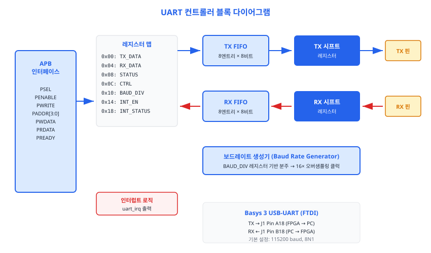
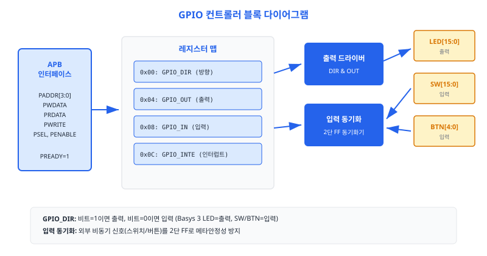
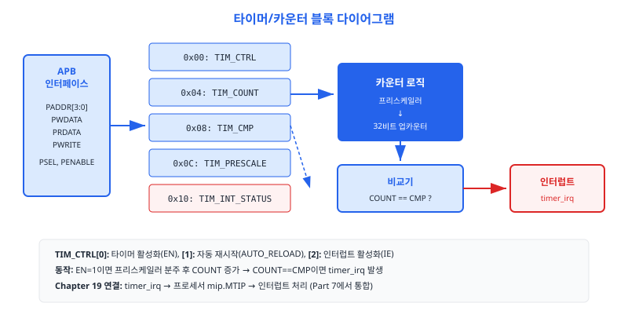
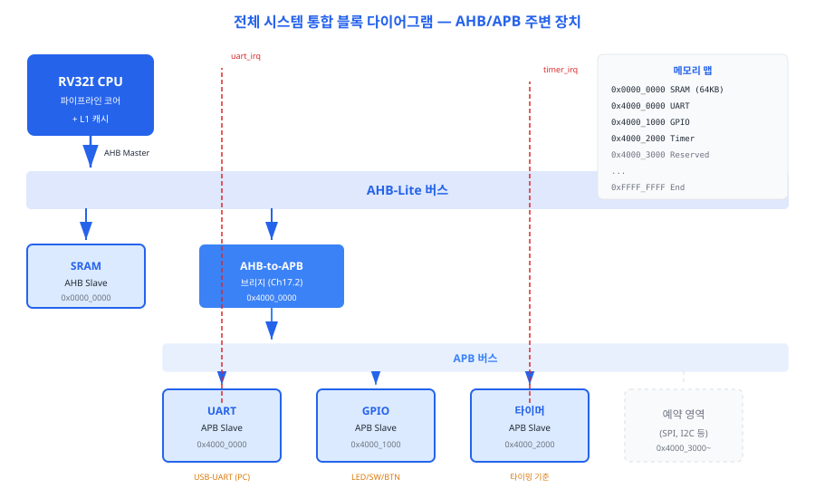

고성능 AHB 버스와 저전력 주변 장치 사이를 연결하는 AHB-to-APB 브리지를 설계합니다. UART, GPIO 컨트롤러를 구현하여 Basys 3 FPGA의 LED, 스위치, USB-UART 인터페이스를 RISC-V 파이프라인 프로세서에 연결하는 완성된 주변 장치 서브시스템을 구축합니다.
16장에서 우리는 AHB(Advanced High-performance Bus) 인터커넥트를 구축하여 CPU, 명령어 메모리, 데이터 메모리를 하나의 버스로 묶었습니다. AHB는 파이프라인 전송과 버스트(burst) 모드를 지원하는 고성능 버스이지만, 그 복잡성이 단점입니다. UART, GPIO, 타이머와 같은 주변 장치 (peripheral)는 초당 수십 메가바이트를 주고받을 필요가 없습니다. 이런 장치들에 굳이 AHB의 복잡한 프로토콜을 구현하는 것은 과잉 설계입니다.
AMBA(Advanced Microcontroller Bus Architecture) 표준은 이 문제를 위해 APB(Advanced Peripheral Bus)를 정의합니다. APB는 파이프라인이 없는 단순한 버스로, 저전력·저면적을 목표로 설계되었습니다. 이 절에서는 APB 프로토콜의 핵심 신호와 2단계 전송 방식을 이해합니다.
단, 이 비유에는 한계가 있습니다. 고속도로와 골목길은 도로 폭(대역폭)의 차이가 주된 특성이지만, AHB와 APB의 핵심 차이는 클럭 속도나 대역폭보다 프로토콜 파이프라인 유무에 있습니다. APB는 파이프라인이 없어 슬레이브 설계가 훨씬 단순해지는 것이 진짜 장점입니다.
APB의 신호 수는 AHB보다 훨씬 적습니다. 아래 표는 APB 마스터(브리지)와 슬레이브(UART, GPIO 등) 사이의 핵심 신호를 정리한 것입니다.
| 신호명 | 방향 | 폭 | 설명 |
|---|---|---|---|
PCLK |
입력 | 1 | APB 클럭. 모든 신호는 상승 에지에 동기화 |
PRESETn |
입력 | 1 | 비동기 리셋 (액티브 로우) |
PADDR |
마스터→슬레이브 | 32 | 주소 버스 |
PSEL |
마스터→슬레이브 | 1 | 슬레이브 선택 신호. 이 슬레이브에게 전송 예정임을 알림 |
PENABLE |
마스터→슬레이브 | 1 | 전송 활성화. PSEL=1이 된 다음 클럭에 1로 올라감 |
PWRITE |
마스터→슬레이브 | 1 | 전송 방향: 1=쓰기, 0=읽기 |
PWDATA |
마스터→슬레이브 | 32 | 쓰기 데이터 |
PRDATA |
슬레이브→마스터 | 32 | 읽기 데이터 |
PREADY |
슬레이브→마스터 | 1 | 슬레이브 준비 완료. 0이면 웨이트 스테이트(wait state) 삽입 |
PSLVERR |
슬레이브→마스터 | 1 | 슬레이브 오류 응답 (선택 사항) |
APB 전송은 반드시 2클럭 이상을 소요합니다. 첫 번째 클럭을 설정 단계(Setup Phase), 두 번째 클럭부터를 접근 단계(Enable Phase)라고 부릅니다. 슬레이브가 느리다면 PREADY를 0으로 유지하여 Enable Phase를 연장할 수 있습니다.
Setup Phase (설정 단계):
Enable Phase (접근 단계):

AHB와 APB의 결정적인 차이는 파이프라인 여부입니다. AHB에서는 T1 클럭에 주소를 전달하는 동시에 T2 클럭의 전송을 예약할 수 있습니다(파이프라인 전송). 반면 APB는 현재 전송이 완전히 끝난 후에야 다음 전송을 시작할 수 있습니다. 이 때문에 APB 슬레이브 설계가 훨씬 단순합니다. PADDR이 유효한 순간 PWDATA도 항상 안정적이므로, 슬레이브는 주소와 데이터를 따로 래치할 필요가 없습니다.
두 버스의 핵심 차이를 표로 정리하면 다음과 같습니다.
| 항목 | AHB | APB |
|---|---|---|
| 파이프라인 | 있음 (주소/데이터 위상 분리) | 없음 (주소·데이터 동일 사이클) |
| 버스트 전송 | 지원 (INCR, WRAP) | 미지원 |
| 최소 전송 사이클 | 1사이클 | 2사이클 (Setup + Enable) |
| 대역폭 | 높음 | 낮음 |
| 슬레이브 설계 복잡도 | 높음 | 낮음 |
| 적합한 장치 | 메모리, DMA, 캐시 | UART, GPIO, 타이머, SPI, I²C |
이 절에서 APB 프로토콜의 기본을 이해했습니다. 다음 절에서는 AHB 세계와 APB 세계를 연결하는 브리지 설계로 넘어갑니다.
CPU는 AHB 버스를 통해 메모리와 주변 장치에 접근합니다. 그런데 UART나 GPIO는 APB에
연결되어 있습니다. CPU가 UART 레지스터 주소(예: 0xFFFF_0000)에 쓰기를 시도하면,
AHB 인터커넥트는 그 주소 범위를 담당하는 슬레이브로 요청을 라우팅합니다. 이 슬레이브가
바로 AHB-to-APB 브리지입니다. 브리지는 AHB 프로토콜로 들어온 요청을 APB 프로토콜로
변환하여 실제 주변 장치에 전달합니다.
AHB-to-APB 브리지의 핵심은 3상태 유한 상태 기계(Finite State Machine, FSM)입니다. 각 상태는 다음 역할을 담당합니다.
htrans == HTRANS_NONSEQ)이 들어오면 ST_SETUP으로 전이합니다.
이 상태에서 hready_out = 1이므로 AHB 마스터는 자유롭게 다음 주소를
전송할 수 있습니다.
psel = 1,
penable = 0으로 설정하여 선택된 슬레이브에게 준비를 알립니다.
이 상태에서 hready_out = 0으로 AHB 마스터를 대기시킵니다.
ST_SETUP은 항상 1클럭만 지속되고, 다음 클럭에 반드시 ST_ACCESS로 전이합니다.
psel = 1,
penable = 1로 전송을 활성화합니다. hready_out = pready로
설정하여 슬레이브가 준비될 때까지 AHB 마스터를 대기시킵니다. 슬레이브가
pready = 1을 응답하면 전송이 완료됩니다.

브리지를 설계할 때 주의해야 할 중요한 점이 있습니다. AHB는 파이프라인 버스이므로, 주소·제어 신호(HADDR, HWRITE)는 T1 클럭에, 실제 쓰기 데이터(HWDATA)는 T2 클럭에 등장합니다. 즉, 주소와 데이터가 1클럭 차이가 납니다.
따라서 브리지는 T1 클럭에 HADDR과 HWRITE를 내부 레지스터(addr_reg,
write_reg)에 래치해 두어야 합니다. T2 클럭이 되면 HWDATA가 유효해지는데,
이때 ST_SETUP→ST_ACCESS 전이가 일어나므로 HWDATA를 직접 PWDATA에 연결하면 됩니다.
래치된 addr_reg와 write_reg는 ST_SETUP과 ST_ACCESS 전체 구간에서 안정적으로 유지됩니다.
연속 전송(Back-to-Back Transfer) 시나리오를 살펴보면 valid_reg의 역할이 명확해집니다.
ST_ACCESS 상태에서 PREADY=1이 되는 바로 그 사이클에 다음 AHB 전송의 HTRANS=NONSEQ가 도착하면,
래치 조건 hready_out && htrans==NONSEQ가 참이 되어 새 주소가 즉시 캡처됩니다.
이 시점에서 valid_reg는 1로 세트되고, FSM은 ST_ACCESS→ST_SETUP→ST_ACCESS 경로로
끊김 없이 다음 전송을 이어갑니다. 반면 ST_ACCESS 완료 시 다음 전송이 없으면(HTRANS=IDLE)
valid_reg가 0으로 클리어되고 FSM은 ST_IDLE로 복귀합니다.
브리지는 래치된 주소(addr_reg[13:12])를 디코딩하여 4개의 APB 슬레이브 중
하나를 선택합니다. 16장에서 설계한 APB 주소 맵에 따라 다음과 같이 배치됩니다.
| 주소 범위 | addr[13:12] | 슬레이브 | PSEL 비트 |
|---|---|---|---|
0xFFFF_0000 ~ 0xFFFF_0FFF |
2'b00 |
UART | psel[0] |
0xFFFF_1000 ~ 0xFFFF_1FFF |
2'b01 |
GPIO | psel[1] |
0xFFFF_2000 ~ 0xFFFF_2FFF |
2'b10 |
Timer | psel[2] |
0xFFFF_3000 ~ 0xFFFF_3FFF |
2'b11 |
예약 | psel[3] |
아래는 ahb_to_apb_bridge 모듈의 전체 구현입니다. 앞서 설명한 3상태 FSM,
AHB 래치 레지스터, APB 슬레이브 선택 디코더가 모두 포함되어 있습니다.
// =============================================================================
// AHB-to-APB 브리지 (AHB-to-APB Bridge)
// Chapter 17.2 — APB 브리지와 주변 장치 연결
// RISC-V 프로세서 설계 완전정복
// =============================================================================
// AHB-Lite 마스터 인터페이스와 APB 슬레이브 인터페이스를 연결하는 프로토콜 변환 브리지.
// 3-상태 FSM(IDLE → SETUP → ACCESS)으로 동작하며,
// AHB 측에서 HREADY를 제어하여 웨이트 스테이트를 삽입합니다.
// =============================================================================
module ahb_to_apb_bridge #(
parameter ADDR_WIDTH = 32, // 주소 버스 폭
parameter DATA_WIDTH = 32, // 데이터 버스 폭
parameter NUM_SLAVES = 4 // APB 슬레이브 수
)(
// 시스템 신호
input logic hclk, // AHB 클럭 (= PCLK)
input logic hreset_n, // 비동기 리셋 (액티브 로우)
// AHB Slave 인터페이스 (CPU/마스터 → 브리지)
input logic [ADDR_WIDTH-1:0] haddr, // AHB 주소
input logic [1:0] htrans, // 전송 타입 (IDLE/NONSEQ)
input logic hwrite, // 쓰기(1) / 읽기(0)
input logic [2:0] hsize, // 전송 크기
input logic [DATA_WIDTH-1:0] hwdata, // 쓰기 데이터
output logic [DATA_WIDTH-1:0] hrdata, // 읽기 데이터
output logic hready_out, // 전송 완료 신호
output logic hresp, // 응답 (0=OKAY)
// APB Master 인터페이스 (브리지 → 슬레이브)
output logic [ADDR_WIDTH-1:0] paddr, // APB 주소
output logic [NUM_SLAVES-1:0] psel, // 슬레이브 선택
output logic penable, // 전송 활성화
output logic pwrite, // 쓰기(1) / 읽기(0)
output logic [DATA_WIDTH-1:0] pwdata, // 쓰기 데이터
input logic [DATA_WIDTH-1:0] prdata, // 읽기 데이터
input logic pready // 슬레이브 준비 완료
);
// =========================================================================
// FSM 상태 정의
// =========================================================================
typedef enum logic [1:0] {
ST_IDLE = 2'b00, // 유휴 상태: APB 전송 없음
ST_SETUP = 2'b01, // 설정 단계: PSEL=1, PENABLE=0
ST_ACCESS = 2'b10 // 접근 단계: PSEL=1, PENABLE=1
} state_t;
state_t state, next_state;
// AHB 전송 타입 상수
localparam HTRANS_IDLE = 2'b00;
localparam HTRANS_NONSEQ = 2'b10;
// =========================================================================
// AHB 측 주소/제어 래치 레지스터
// =========================================================================
// AHB는 파이프라인 전송이므로, 주소 단계(T1)에서 주소/제어를 캡처하고
// 데이터 단계(T2)에서 HWDATA를 사용합니다.
logic [ADDR_WIDTH-1:0] addr_reg;
logic write_reg;
logic valid_reg; // 유효한 전송이 래치됨
// AHB 주소 단계 캡처 (유효한 전송일 때만)
always_ff @(posedge hclk or negedge hreset_n) begin
if (!hreset_n) begin
addr_reg <= '0;
write_reg <= 1'b0;
valid_reg <= 1'b0;
end else if (hready_out && (htrans == HTRANS_NONSEQ)) begin
addr_reg <= haddr;
write_reg <= hwrite;
valid_reg <= 1'b1;
end else if (state == ST_ACCESS && pready) begin
valid_reg <= 1'b0;
end
end
// =========================================================================
// FSM 상태 레지스터
// =========================================================================
always_ff @(posedge hclk or negedge hreset_n) begin
if (!hreset_n)
state <= ST_IDLE;
else
state <= next_state;
end
// =========================================================================
// FSM 다음 상태 로직
// =========================================================================
always_comb begin
next_state = state;
case (state)
ST_IDLE: begin
// AHB에서 유효한 전송이 들어오면 SETUP으로 진입
if (htrans == HTRANS_NONSEQ && hready_out)
next_state = ST_SETUP;
end
ST_SETUP: begin
// SETUP 단계는 항상 1사이클 → ACCESS로 전이
next_state = ST_ACCESS;
end
ST_ACCESS: begin
if (pready) begin
// 슬레이브가 완료 → 다음 전송이 대기 중이면 SETUP, 아니면 IDLE
if (valid_reg)
next_state = ST_SETUP;
else
next_state = ST_IDLE;
end
// pready=0이면 ACCESS 상태 유지 (웨이트 스테이트)
end
default: next_state = ST_IDLE;
endcase
end
// =========================================================================
// APB 슬레이브 선택 디코더 (주소 상위 비트 기반)
// =========================================================================
// 주소 맵 (4KB 단위, Ch16 인터커넥트 APB 슬롯 0xFFFF_xxxx 기준):
// Slave 0: 0xFFFF_0000 ~ 0xFFFF_0FFF (UART) addr[13:12]=2'b00
// Slave 1: 0xFFFF_1000 ~ 0xFFFF_1FFF (GPIO) addr[13:12]=2'b01
// Slave 2: 0xFFFF_2000 ~ 0xFFFF_2FFF (Timer) addr[13:12]=2'b10
// Slave 3: 0xFFFF_3000 ~ 0xFFFF_3FFF (예약) addr[13:12]=2'b11
logic [NUM_SLAVES-1:0] psel_decoded;
always_comb begin
psel_decoded = '0;
case (addr_reg[13:12])
2'b00: psel_decoded[0] = 1'b1; // UART
2'b01: psel_decoded[1] = 1'b1; // GPIO
2'b10: psel_decoded[2] = 1'b1; // Timer
2'b11: psel_decoded[3] = 1'b1; // Reserved
default: psel_decoded = '0;
endcase
end
// =========================================================================
// APB 출력 신호 생성
// =========================================================================
always_comb begin
paddr = addr_reg;
pwrite = write_reg;
pwdata = hwdata; // AHB 데이터 단계에서 직접 전달
case (state)
ST_SETUP: begin
psel = psel_decoded;
penable = 1'b0;
end
ST_ACCESS: begin
psel = psel_decoded;
penable = 1'b1;
end
default: begin
psel = '0;
penable = 1'b0;
end
endcase
end
// =========================================================================
// AHB 응답 신호
// =========================================================================
// HREADY: IDLE/SETUP에서는 즉시 ready (새 주소 수신 가능)
// ACCESS에서는 PREADY가 올 때까지 대기
always_comb begin
case (state)
ST_IDLE: hready_out = 1'b1;
ST_SETUP: hready_out = 1'b0; // SETUP 진입 시 1사이클 대기
ST_ACCESS: hready_out = pready; // 슬레이브 응답 대기
default: hready_out = 1'b1;
endcase
end
// 읽기 데이터는 APB 슬레이브에서 직접 전달
assign hrdata = prdata;
// 항상 OKAY 응답 (에러 응답 미지원)
assign hresp = 1'b0;
endmodule
코드에서 가장 중요한 부분은 hready_out 제어입니다. ST_SETUP 상태에서
hready_out = 0으로 설정하는 이유는, AHB 마스터(CPU)가 다음 주소를
버스에 올리는 것을 막기 위해서입니다. 브리지가 APB 전송을 처리하는 동안 AHB 마스터가
새로운 전송을 시작하면 이전 주소·데이터가 덮어써질 수 있기 때문입니다.
ST_ACCESS에서 hready_out = pready는 APB 슬레이브의 응답 속도가
AHB 마스터에게 그대로 전달됨을 의미합니다. UART나 GPIO처럼 항상 pready = 1인
슬레이브는 추가 대기 없이 바로 완료됩니다. 반면 플래시 메모리처럼 느린 슬레이브라면
여러 클럭 동안 pready = 0을 유지하여 AHB 마스터를 자동으로 대기시킵니다.
임베디드 시스템을 처음 만들면 가장 먼저 하고 싶은 것이 무엇입니까? 바로 "Hello, World!"를 출력하는 것입니다. 우리의 RISC-V 프로세서가 PC와 통신하려면 UART(Universal Asynchronous Receiver/Transmitter, 범용 비동기 송수신기)가 필요합니다. 이 절에서는 APB 인터페이스를 갖춘 UART 컨트롤러를 설계합니다. Basys 3 FPGA의 USB-UART 브리지(Silicon Laboratories CP2102)에 연결하면, 우리의 RISC-V 프로세서가 PC 터미널에 문자를 출력할 수 있습니다.
비유의 한계: 모스부호는 점(·)과 선(—)의 길이로 문자를 구분하는 가변 길이 인코딩이지만, UART는 고정된 비트 폭(1/baud_rate 초)으로 신호를 전송하는 NRZ(Non-Return-to-Zero) 방식입니다. 공통점은 "직렬로 한 번에 한 비트씩 전송한다"는 점입니다.
UART는 데이터를 '프레임(frame)' 단위로 전송합니다. 우리가 사용하는 8N1 포맷은 가장 일반적인 설정으로, 다음과 같이 구성됩니다.
따라서 한 문자를 전송하는 데 시작(1) + 데이터(8) + 정지(1) = 총 10비트가 필요합니다. 115200 baud(초당 115,200비트)라면 한 문자를 전송하는 데 약 86.8μs가 걸립니다. "Hello RISC-V\n" 13자는 약 1.13ms가 소요됩니다.
수신기는 언제 데이터를 샘플링해야 할까요? 이상적으로는 각 비트의 정중앙에서 샘플링하면 노이즈의 영향을 최소화할 수 있습니다. UART 수신기는 이를 위해 16× 오버샘플링(16× oversampling)을 사용합니다.
클럭 분주기가 보드레이트의 16배 속도로 틱(tick)을 생성합니다. 각 비트 구간이 16개의 틱으로 나뉘므로, 8번째 틱이 비트의 중앙이 됩니다. 수신기는 시작 비트의 하강 에지(하강: HIGH→LOW 전환)를 감지하면 카운터를 초기화하고, 8번째 틱에서 시작 비트를 검증합니다. 이때도 LOW라면 유효한 시작 비트이고, HIGH라면 노이즈로 판단하여 무시합니다. 이후 각 데이터 비트는 16번째 틱(다음 비트의 중앙)에서 샘플링됩니다.

UART 컨트롤러는 송신(TX)과 수신(RX) 각각 독립적인 FSM을 가집니다. 두 FSM은 같은 baud_tick을 공유하지만 완전히 병렬로 동작합니다.
TX FSM (TX_IDLE → TX_START → TX_DATA → TX_STOP):
RX FSM (RX_IDLE → RX_START → RX_DATA → RX_STOP):
소프트웨어는 APB를 통해 다음 레지스터에 접근하여 UART를 제어합니다.
| 오프셋 | 이름 | 접근 | 설명 |
|---|---|---|---|
0x00 |
TX_DATA | 쓰기 전용 | [7:0] 송신할 문자를 TX FIFO에 추가 |
0x04 |
RX_DATA | 읽기 전용 | [7:0] RX FIFO에서 수신된 문자 읽기 |
0x08 |
STATUS | 읽기 전용 | [0]=tx_empty, [1]=tx_full, [2]=rx_valid, [3]=rx_full |
0x0C |
CTRL | 읽기/쓰기 | [0]=TX_EN, [1]=RX_EN (기본: 0x03, 모두 활성화) |
0x10 |
BAUD_DIV | 읽기/쓰기 | [15:0] 보드레이트 분주 값 (기본: 54 = 115200 baud) |
0x14 |
INT_EN | 읽기/쓰기 | [0]=TX_EMPTY_IE, [1]=RX_VALID_IE 인터럽트 활성화 |
0x18 |
INT_STATUS | 읽기/W1C | [0]=TX_EMPTY, [1]=RX_VALID. 1을 쓰면 해당 비트 클리어 |
INT_STATUS 레지스터는 W1C(Write-1-to-Clear, 1을 써서 클리어) 방식으로 동작합니다.
소프트웨어가 0x01을 쓰면 비트 0(TX_EMPTY 인터럽트)이 클리어됩니다.
이 방식의 장점은 읽기-수정-쓰기(Read-Modify-Write) 없이 특정 비트만 클리어할 수
있다는 점입니다. 코드에서 int_status_reg는 단일 always_ff 블록에서만
구동됩니다. 이는 다중 드라이버(multiple driver) 오류를 방지하고 우선순위를 명확히
하기 위해서입니다: 소프트웨어 클리어(W1C)가 하드웨어 이벤트 세트보다 높은 우선순위를
가집니다.
int_status_reg는 반드시 단일 always_ff 블록에서만 구동해야 합니다.
두 블록이 동시에 같은 레지스터를 구동하면 SystemVerilog IEEE 1800-2017은 이를
다중 드라이버(Multiple Driver) 위반으로 처리합니다. 단일 블록 내에서
if (apb_write && paddr==ADDR_INT_STATUS) 조건을 먼저 평가하면
자동으로 "소프트웨어 클리어 > 하드웨어 세트" 우선순위가 형성됩니다.

FIFO(First-In First-Out, 선입선출 버퍼)는 데이터를 보낸 순서대로 꺼내는 큐(Queue)입니다.
원형 버퍼(Circular Buffer) 방식으로 구현하면 고정 크기 메모리를 순환하며 사용합니다.
쓰기 포인터(wr_ptr)와 읽기 포인터(rd_ptr)가 각각 독립적으로 전진하며, 두 포인터가 같으면 빈(Empty),
MSB(최상위 비트)만 다르고 나머지가 같으면 가득 참(Full) 상태입니다.
포인터 폭이 $clog2(DEPTH)+1비트인 이유가 바로 이 Full/Empty 구분을 위해서입니다.
// =============================================================================
// APB UART 컨트롤러 (APB UART Controller)
// Chapter 17.3 — APB 브리지와 주변 장치 연결
// RISC-V 프로세서 설계 완전정복
// =============================================================================
// 8N1 포맷(8비트 데이터, 패리티 없음, 1 정지 비트) UART 송수신기.
// 송신/수신 각각 8엔트리 FIFO를 보유하며, 보드레이트 분주 레지스터로 설정.
// Basys 3 USB-UART (Silicon Laboratories CP2102) 연결 기준: 115200 baud @ 100MHz.
// =============================================================================
module apb_uart #(
parameter CLK_FREQ = 100_000_000, // 시스템 클럭 주파수 (Hz)
parameter FIFO_DEPTH = 8 // TX/RX FIFO 깊이
)(
// APB 인터페이스
input logic pclk, // APB 클럭
input logic preset_n, // 비동기 리셋
input logic psel, // 슬레이브 선택
input logic penable, // 전송 활성화
input logic pwrite, // 쓰기(1) / 읽기(0)
input logic [4:0] paddr, // 주소 (바이트 단위)
input logic [31:0] pwdata, // 쓰기 데이터
output logic [31:0] prdata, // 읽기 데이터
output logic pready, // 항상 1 (웨이트 없음)
// UART 물리 인터페이스
output logic uart_tx, // 송신 핀 (FPGA → PC)
input logic uart_rx, // 수신 핀 (PC → FPGA)
// 인터럽트 출력
output logic uart_irq // 인터럽트 요청
);
// =========================================================================
// 레지스터 맵 정의
// =========================================================================
localparam ADDR_TX_DATA = 5'h00; // [7:0] 송신 데이터 (쓰기 전용)
localparam ADDR_RX_DATA = 5'h04; // [7:0] 수신 데이터 (읽기 전용)
localparam ADDR_STATUS = 5'h08; // 상태 레지스터 (읽기 전용)
localparam ADDR_CTRL = 5'h0C; // 제어 레지스터
localparam ADDR_BAUD_DIV = 5'h10; // 보드레이트 분주 값
localparam ADDR_INT_EN = 5'h14; // 인터럽트 활성화
localparam ADDR_INT_STATUS = 5'h18; // 인터럽트 상태 (W1C)
// 상태 레지스터 비트
// [0]: TX FIFO 빈 상태 (tx_empty)
// [1]: TX FIFO 가득 참 (tx_full)
// [2]: RX FIFO 데이터 있음 (rx_valid)
// [3]: RX FIFO 가득 참 (rx_full)
// =========================================================================
// 내부 레지스터
// =========================================================================
logic [15:0] baud_div; // 보드레이트 분주 값
logic [7:0] ctrl_reg; // 제어 레지스터 [0]=TX_EN, [1]=RX_EN
logic [7:0] int_en_reg; // 인터럽트 활성화 [0]=TX_EMPTY, [1]=RX_VALID
logic [7:0] int_status_reg; // 인터럽트 상태
// =========================================================================
// TX FIFO 신호
// =========================================================================
logic [7:0] tx_fifo_wdata, tx_fifo_rdata;
logic tx_fifo_push, tx_fifo_pop;
logic tx_fifo_empty, tx_fifo_full;
// =========================================================================
// RX FIFO 신호
// =========================================================================
logic [7:0] rx_fifo_wdata, rx_fifo_rdata;
logic rx_fifo_push, rx_fifo_pop;
logic rx_fifo_empty, rx_fifo_full;
// =========================================================================
// 보드레이트 생성기
// =========================================================================
// 16× 오버샘플링 클럭 생성: baud_tick = CLK_FREQ / (baud_rate × 16)
// 예: 115200 baud @ 100MHz → baud_div = 100_000_000 / (115200 × 16) ≈ 54
logic [15:0] baud_counter;
logic baud_tick; // 16× 오버샘플링 틱
always_ff @(posedge pclk or negedge preset_n) begin
if (!preset_n) begin
baud_counter <= '0;
baud_tick <= 1'b0;
end else begin
if (baud_counter >= baud_div - 1) begin
baud_counter <= '0;
baud_tick <= 1'b1;
end else begin
baud_counter <= baud_counter + 1;
baud_tick <= 1'b0;
end
end
end
// =========================================================================
// TX 송신 FSM
// =========================================================================
typedef enum logic [1:0] {
TX_IDLE = 2'b00,
TX_START = 2'b01,
TX_DATA = 2'b10,
TX_STOP = 2'b11
} tx_state_t;
tx_state_t tx_state;
logic [3:0] tx_bit_cnt; // 16× 오버샘플링 카운터
logic [2:0] tx_data_idx; // 데이터 비트 인덱스 (0~7)
logic [7:0] tx_shift_reg; // 송신 시프트 레지스터
always_ff @(posedge pclk or negedge preset_n) begin
if (!preset_n) begin
tx_state <= TX_IDLE;
tx_bit_cnt <= '0;
tx_data_idx <= '0;
tx_shift_reg <= '0;
uart_tx <= 1'b1; // 유휴 상태: HIGH
tx_fifo_pop <= 1'b0;
end else begin
tx_fifo_pop <= 1'b0;
case (tx_state)
TX_IDLE: begin
uart_tx <= 1'b1;
if (!tx_fifo_empty && ctrl_reg[0]) begin
tx_shift_reg <= tx_fifo_rdata;
tx_fifo_pop <= 1'b1;
tx_state <= TX_START;
tx_bit_cnt <= '0;
end
end
TX_START: begin
uart_tx <= 1'b0; // 시작 비트: LOW
if (baud_tick) begin
if (tx_bit_cnt == 4'd15) begin
tx_bit_cnt <= '0;
tx_data_idx <= '0;
tx_state <= TX_DATA;
end else begin
tx_bit_cnt <= tx_bit_cnt + 1;
end
end
end
TX_DATA: begin
uart_tx <= tx_shift_reg[tx_data_idx]; // LSB 먼저
if (baud_tick) begin
if (tx_bit_cnt == 4'd15) begin
tx_bit_cnt <= '0;
if (tx_data_idx == 3'd7) begin
tx_state <= TX_STOP;
end else begin
tx_data_idx <= tx_data_idx + 1;
end
end else begin
tx_bit_cnt <= tx_bit_cnt + 1;
end
end
end
TX_STOP: begin
uart_tx <= 1'b1; // 정지 비트: HIGH
if (baud_tick) begin
if (tx_bit_cnt == 4'd15) begin
tx_state <= TX_IDLE;
end else begin
tx_bit_cnt <= tx_bit_cnt + 1;
end
end
end
endcase
end
end
// =========================================================================
// RX 수신 FSM
// =========================================================================
typedef enum logic [1:0] {
RX_IDLE = 2'b00,
RX_START = 2'b01,
RX_DATA = 2'b10,
RX_STOP = 2'b11
} rx_state_t;
rx_state_t rx_state;
logic [3:0] rx_bit_cnt;
logic [2:0] rx_data_idx;
logic [7:0] rx_shift_reg;
// 2단 동기화기 (메타안정성 방지)
logic rx_sync_0, rx_sync_1;
always_ff @(posedge pclk or negedge preset_n) begin
if (!preset_n) begin
rx_sync_0 <= 1'b1;
rx_sync_1 <= 1'b1;
end else begin
rx_sync_0 <= uart_rx;
rx_sync_1 <= rx_sync_0;
end
end
always_ff @(posedge pclk or negedge preset_n) begin
if (!preset_n) begin
rx_state <= RX_IDLE;
rx_bit_cnt <= '0;
rx_data_idx <= '0;
rx_shift_reg <= '0;
rx_fifo_push <= 1'b0;
rx_fifo_wdata <= '0;
end else begin
rx_fifo_push <= 1'b0;
case (rx_state)
RX_IDLE: begin
if (!rx_sync_1 && ctrl_reg[1]) begin // 시작 비트 감지 (하강 에지)
rx_state <= RX_START;
rx_bit_cnt <= '0;
end
end
RX_START: begin
if (baud_tick) begin
if (rx_bit_cnt == 4'd7) begin // 시작 비트 중앙에서 샘플링
if (!rx_sync_1) begin // 여전히 LOW → 유효한 시작 비트
rx_bit_cnt <= '0;
rx_data_idx <= '0;
rx_state <= RX_DATA;
end else begin
rx_state <= RX_IDLE; // 노이즈 — 무시
end
end else begin
rx_bit_cnt <= rx_bit_cnt + 1;
end
end
end
RX_DATA: begin
if (baud_tick) begin
if (rx_bit_cnt == 4'd15) begin // 비트 중앙에서 샘플링
rx_bit_cnt <= '0;
rx_shift_reg[rx_data_idx] <= rx_sync_1; // LSB 먼저
if (rx_data_idx == 3'd7) begin
rx_state <= RX_STOP;
end else begin
rx_data_idx <= rx_data_idx + 1;
end
end else begin
rx_bit_cnt <= rx_bit_cnt + 1;
end
end
end
RX_STOP: begin
if (baud_tick) begin
if (rx_bit_cnt == 4'd15) begin
if (rx_sync_1) begin // 정지 비트 = HIGH → 유효 프레임
rx_fifo_wdata <= rx_shift_reg;
rx_fifo_push <= 1'b1;
end
rx_state <= RX_IDLE;
end else begin
rx_bit_cnt <= rx_bit_cnt + 1;
end
end
end
endcase
end
end
// =========================================================================
// 간이 동기 FIFO (TX / RX 공용)
// =========================================================================
// 합성 가능한 포인터 기반 원형 버퍼
logic [7:0] tx_fifo_mem [0:FIFO_DEPTH-1];
logic [$clog2(FIFO_DEPTH):0] tx_wr_ptr, tx_rd_ptr;
assign tx_fifo_empty = (tx_wr_ptr == tx_rd_ptr);
assign tx_fifo_full = (tx_wr_ptr[$clog2(FIFO_DEPTH)] != tx_rd_ptr[$clog2(FIFO_DEPTH)]) &&
(tx_wr_ptr[$clog2(FIFO_DEPTH)-1:0] == tx_rd_ptr[$clog2(FIFO_DEPTH)-1:0]);
assign tx_fifo_rdata = tx_fifo_mem[tx_rd_ptr[$clog2(FIFO_DEPTH)-1:0]];
always_ff @(posedge pclk or negedge preset_n) begin
if (!preset_n) begin
tx_wr_ptr <= '0;
tx_rd_ptr <= '0;
end else begin
if (tx_fifo_push && !tx_fifo_full) begin
tx_fifo_mem[tx_wr_ptr[$clog2(FIFO_DEPTH)-1:0]] <= tx_fifo_wdata;
tx_wr_ptr <= tx_wr_ptr + 1;
end
if (tx_fifo_pop && !tx_fifo_empty)
tx_rd_ptr <= tx_rd_ptr + 1;
end
end
logic [7:0] rx_fifo_mem [0:FIFO_DEPTH-1];
logic [$clog2(FIFO_DEPTH):0] rx_wr_ptr, rx_rd_ptr;
assign rx_fifo_empty = (rx_wr_ptr == rx_rd_ptr);
assign rx_fifo_full = (rx_wr_ptr[$clog2(FIFO_DEPTH)] != rx_rd_ptr[$clog2(FIFO_DEPTH)]) &&
(rx_wr_ptr[$clog2(FIFO_DEPTH)-1:0] == rx_rd_ptr[$clog2(FIFO_DEPTH)-1:0]);
assign rx_fifo_rdata = rx_fifo_mem[rx_rd_ptr[$clog2(FIFO_DEPTH)-1:0]];
always_ff @(posedge pclk or negedge preset_n) begin
if (!preset_n) begin
rx_wr_ptr <= '0;
rx_rd_ptr <= '0;
end else begin
if (rx_fifo_push && !rx_fifo_full) begin
rx_fifo_mem[rx_wr_ptr[$clog2(FIFO_DEPTH)-1:0]] <= rx_fifo_wdata;
rx_wr_ptr <= rx_wr_ptr + 1;
end
if (rx_fifo_pop && !rx_fifo_empty)
rx_rd_ptr <= rx_rd_ptr + 1;
end
end
// =========================================================================
// APB 레지스터 읽기/쓰기
// =========================================================================
logic apb_write, apb_read;
assign apb_write = psel && penable && pwrite;
assign apb_read = psel && penable && !pwrite;
// TX FIFO 쓰기 신호
assign tx_fifo_push = apb_write && (paddr == ADDR_TX_DATA);
assign tx_fifo_wdata = pwdata[7:0];
// RX FIFO 읽기 신호
assign rx_fifo_pop = apb_read && (paddr == ADDR_RX_DATA);
// 레지스터 쓰기 (int_status_reg 제외 — 아래 전용 블록에서 처리)
always_ff @(posedge pclk or negedge preset_n) begin
if (!preset_n) begin
ctrl_reg <= 8'h03; // TX_EN=1, RX_EN=1 (기본 활성화)
baud_div <= 16'd54; // 115200 baud @ 100MHz 기본값
int_en_reg <= '0;
end else if (apb_write) begin
case (paddr)
ADDR_CTRL: ctrl_reg <= pwdata[7:0];
ADDR_BAUD_DIV: baud_div <= pwdata[15:0];
ADDR_INT_EN: int_en_reg <= pwdata[7:0];
default: ; // 무시
endcase
end
end
// 레지스터 읽기 멀티플렉서
always_comb begin
prdata = 32'h0;
case (paddr)
ADDR_TX_DATA: prdata = 32'h0; // 쓰기 전용
ADDR_RX_DATA: prdata = {24'h0, rx_fifo_rdata};
ADDR_STATUS: prdata = {28'h0, rx_fifo_full, ~rx_fifo_empty,
tx_fifo_full, tx_fifo_empty};
ADDR_CTRL: prdata = {24'h0, ctrl_reg};
ADDR_BAUD_DIV: prdata = {16'h0, baud_div};
ADDR_INT_EN: prdata = {24'h0, int_en_reg};
ADDR_INT_STATUS: prdata = {24'h0, int_status_reg};
default: prdata = 32'h0;
endcase
end
// APB는 웨이트 스테이트 없이 즉시 응답
assign pready = 1'b1;
// =========================================================================
// 인터럽트 상태 레지스터 — 단일 always_ff로 W1C + 이벤트 세트 통합
// =========================================================================
// 우선순위: W1C 클리어(소프트웨어 쓰기) > 이벤트 세트(하드웨어)
// 다중 드라이버 방지: int_status_reg는 이 블록에서만 구동
always_ff @(posedge pclk or negedge preset_n) begin
if (!preset_n) begin
int_status_reg <= '0;
end else if (apb_write && (paddr == ADDR_INT_STATUS)) begin
// W1C (Write-1-to-Clear): 소프트웨어가 1을 쓰면 해당 비트 클리어
int_status_reg <= int_status_reg & ~pwdata[7:0];
end else begin
// 하드웨어 이벤트 세트 (클리어보다 낮은 우선순위)
if (tx_fifo_empty)
int_status_reg[0] <= 1'b1; // TX FIFO 비면 인터럽트 세트
if (!rx_fifo_empty)
int_status_reg[1] <= 1'b1; // RX 데이터 도착 시 인터럽트 세트
end
end
assign uart_irq = |(int_status_reg & int_en_reg);
endmoduleUART로 PC와 텍스트 통신을 할 수 있게 되었습니다. 이제 FPGA 보드에 직접 장착된 LED와 스위치를 제어해 보겠습니다. GPIO(General Purpose Input/Output, 범용 입출력)는 디지털 핀 하나하나를 프로그래머블하게 입력 또는 출력으로 설정할 수 있는 컨트롤러입니다. Basys 3에는 LED 16개, 슬라이드 스위치 16개, 푸시버튼 5개가 있어 총 37개의 GPIO 핀이 존재합니다.
우리의 GPIO 컨트롤러는 32비트 폭으로 설계되었으며, Basys 3의 물리 핀과 다음과 같이 연결됩니다.
| GPIO 비트 | Basys 3 핀 | 기본 방향 | 용도 |
|---|---|---|---|
| [15:0] | LED[15:0] | 출력 | 16개 LED 제어 |
| [31:16] | SW[15:0] | 입력 | 16개 슬라이드 스위치 읽기 |
푸시버튼 5개(BTN[4:0])는 별도의 GPIO 인스턴스나 상위 비트에 추가로 연결할 수 있습니다. 이 챕터에서는 기본 32비트 설계로 진행합니다.
GPIO의 핵심은 방향 레지스터(Direction Register)입니다. 32비트 레지스터의 각 비트가 대응하는 GPIO 핀의 방향을 결정합니다.
dir_reg[n] = 1: 핀 n은 출력. out_reg[n] 값이 물리 핀에 나타남dir_reg[n] = 0: 핀 n은 입력. 물리 핀의 값이 gpio_in_sync_1[n]으로 읽힘
출력 로직은 gpio_out = out_reg & dir_reg로 구현됩니다. 입력으로 설정된
핀(dir_reg[n] = 0)은 강제로 0이 출력됩니다. 이는 FPGA의 출력 버퍼와
외부 드라이버가 동시에 버스를 구동하는 '버스 충돌'을 방지하기 위해서입니다.
실제 FPGA 핀에서는 gpio_oe = dir_reg 신호로 3상태 버퍼(IOBUF, Tristate Buffer)의
출력 인에이블을 제어합니다.
스위치와 버튼은 비동기(asynchronous) 신호입니다. 사람이 스위치를 누르는 시점과 FPGA의 클럭 에지가 우연히 겹칠 수 있습니다. 이 경우 플립플롭이 '어떤 값이 맞는지 결정하지 못하는' 메타안정성(Metastability) 상태에 빠질 수 있습니다. 메타안정성 상태의 플립플롭 출력은 0과 1 사이의 불확정 전압을 출력하다가, 결국 어느 한 값으로 수렴합니다. 이 수렴 시간이 클럭 주기를 초과하면 뒤따르는 로직이 잘못된 값을 읽게 됩니다.
해법은 2단 플립플롭 동기화기(2-Flip-Flop Synchronizer)입니다. 비동기 입력을 두 개의 플립플롭을 통과시켜 2클럭의 정착 시간을 줍니다.
gpio_in_sync_0 <= gpio_in — 비동기 입력을 첫 번째 FF에 래치. 이 FF의 출력이 메타안정 상태일 수 있음gpio_in_sync_1 <= gpio_in_sync_0 — 첫 번째 FF의 출력을 한 클럭 더 래치. 메타안정 상태가 해소될 시간을 줌100MHz 클럭에서 한 클럭 주기는 10ns입니다. 메타안정 상태의 수렴 시간은 지수적으로 감소하며, 10ns 후에도 수렴하지 못할 확률은 극히 낮습니다. 2단 동기화기는 이 확률을 무시할 수 있는 수준까지 낮춰 줍니다.

버튼을 누르는 순간(상승 에지)을 인터럽트로 감지할 수 있습니다.
gpio_in_prev는 gpio_in_sync_1의 한 클럭 전 값을 저장합니다.
상승 에지는 gpio_in_sync_1 = 1이고 gpio_in_prev = 0인 순간입니다:
rising_edge = gpio_in_sync_1 & ~gpio_in_prev
인터럽트는 입력 핀(~dir_reg)에서만 발생해야 합니다. 출력으로 설정된 핀은
CPU 자신이 바꾼 값이므로 인터럽트 대상이 아닙니다:
gpio_irq = |(rising_edge & int_en_reg & ~dir_reg)
| 오프셋 | 이름 | 접근 | 설명 |
|---|---|---|---|
0x00 |
GPIO_DIR | 읽기/쓰기 | [31:0] 핀별 방향 (1=출력, 0=입력). 리셋 시 모두 0(입력) |
0x04 |
GPIO_OUT | 읽기/쓰기 | [31:0] 출력 핀에 쓸 값. 방향이 출력인 핀만 물리 핀에 반영 |
0x08 |
GPIO_IN | 읽기 전용 | [31:0] 동기화된 입력 핀 값 (gpio_in_sync_1) |
0x0C |
GPIO_INT_EN | 읽기/쓰기 | [31:0] 상승 에지 인터럽트 활성화 (입력 핀만 유효) |
// =============================================================================
// APB GPIO 컨트롤러 (APB GPIO Controller)
// Chapter 17.4 — APB 브리지와 주변 장치 연결
// RISC-V 프로세서 설계 완전정복
// =============================================================================
// 범용 입출력(GPIO) 컨트롤러. 방향 레지스터로 각 핀의 입출력을 개별 설정.
// Basys 3 매핑: LED[15:0] = 출력, SW[15:0] + BTN[4:0] = 입력.
// 외부 비동기 입력은 2단 플립플롭으로 동기화하여 메타안정성 방지.
// =============================================================================
module apb_gpio #(
parameter GPIO_WIDTH = 32 // GPIO 핀 수 (Basys 3: LED 16 + SW 16 + BTN 5)
)(
// APB 인터페이스
input logic pclk, // APB 클럭
input logic preset_n, // 비동기 리셋
input logic psel, // 슬레이브 선택
input logic penable, // 전송 활성화
input logic pwrite, // 쓰기(1) / 읽기(0)
input logic [4:0] paddr, // 주소 (바이트 단위)
input logic [31:0] pwdata, // 쓰기 데이터
output logic [31:0] prdata, // 읽기 데이터
output logic pready, // 항상 1
// GPIO 물리 핀
output logic [GPIO_WIDTH-1:0] gpio_out, // 출력 핀
input logic [GPIO_WIDTH-1:0] gpio_in, // 입력 핀
output logic [GPIO_WIDTH-1:0] gpio_oe, // 출력 인에이블 (방향)
// 인터럽트 출력
output logic gpio_irq // 인터럽트 요청
);
// =========================================================================
// 레지스터 맵 정의
// =========================================================================
localparam ADDR_GPIO_DIR = 5'h00; // 방향 레지스터 (1=출력, 0=입력)
localparam ADDR_GPIO_OUT = 5'h04; // 출력 데이터 레지스터
localparam ADDR_GPIO_IN = 5'h08; // 입력 데이터 레지스터 (읽기 전용)
localparam ADDR_GPIO_INT_EN = 5'h0C; // 인터럽트 활성화 (에지 감지)
// =========================================================================
// 내부 레지스터
// =========================================================================
logic [GPIO_WIDTH-1:0] dir_reg; // 방향: 1=출력, 0=입력
logic [GPIO_WIDTH-1:0] out_reg; // 출력 데이터
logic [GPIO_WIDTH-1:0] int_en_reg; // 인터럽트 활성화 (상승 에지)
// =========================================================================
// 입력 동기화 — 2단 플립플롭 (메타안정성 방지)
// =========================================================================
logic [GPIO_WIDTH-1:0] gpio_in_sync_0;
logic [GPIO_WIDTH-1:0] gpio_in_sync_1;
logic [GPIO_WIDTH-1:0] gpio_in_prev; // 에지 감지용 이전 값
always_ff @(posedge pclk or negedge preset_n) begin
if (!preset_n) begin
gpio_in_sync_0 <= '0;
gpio_in_sync_1 <= '0;
gpio_in_prev <= '0;
end else begin
gpio_in_sync_0 <= gpio_in;
gpio_in_sync_1 <= gpio_in_sync_0;
gpio_in_prev <= gpio_in_sync_1;
end
end
// =========================================================================
// APB 레지스터 쓰기
// =========================================================================
logic apb_write, apb_read;
assign apb_write = psel && penable && pwrite;
assign apb_read = psel && penable && !pwrite;
always_ff @(posedge pclk or negedge preset_n) begin
if (!preset_n) begin
dir_reg <= '0; // 리셋 시 모든 핀 입력
out_reg <= '0;
int_en_reg <= '0;
end else if (apb_write) begin
case (paddr)
ADDR_GPIO_DIR: dir_reg <= pwdata[GPIO_WIDTH-1:0];
ADDR_GPIO_OUT: out_reg <= pwdata[GPIO_WIDTH-1:0];
ADDR_GPIO_INT_EN: int_en_reg <= pwdata[GPIO_WIDTH-1:0];
default: ; // 무시
endcase
end
end
// =========================================================================
// APB 레지스터 읽기
// =========================================================================
always_comb begin
prdata = 32'h0;
case (paddr)
ADDR_GPIO_DIR: prdata = {{(32-GPIO_WIDTH){1'b0}}, dir_reg};
ADDR_GPIO_OUT: prdata = {{(32-GPIO_WIDTH){1'b0}}, out_reg};
ADDR_GPIO_IN: prdata = {{(32-GPIO_WIDTH){1'b0}}, gpio_in_sync_1};
ADDR_GPIO_INT_EN: prdata = {{(32-GPIO_WIDTH){1'b0}}, int_en_reg};
default: prdata = 32'h0;
endcase
end
// APB는 웨이트 없이 즉시 응답
assign pready = 1'b1;
// =========================================================================
// 출력 로직
// =========================================================================
// 방향이 출력(1)인 핀만 out_reg 값을 출력, 입력(0) 핀은 0 유지
assign gpio_out = out_reg & dir_reg;
assign gpio_oe = dir_reg;
// =========================================================================
// 인터럽트 로직 — 상승 에지(Rising Edge) 감지
// =========================================================================
logic [GPIO_WIDTH-1:0] rising_edge;
assign rising_edge = gpio_in_sync_1 & ~gpio_in_prev;
// 입력 핀(!dir_reg)에서만 인터럽트 감지
assign gpio_irq = |(rising_edge & int_en_reg & ~dir_reg);
endmoduleGPIO 컨트롤러는 단순하지만 실제 FPGA 설계에서 매우 중요한 두 가지 개념을 담고 있습니다: 방향 레지스터 기반 핀 제어와 2단 플립플롭 동기화기. 특히 2단 동기화기는 GPIO뿐 아니라 비동기 외부 신호를 처리하는 모든 설계에서 반드시 사용해야 합니다. 다음 절에서는 타이머 컨트롤러를 설계하고, 인터럽트 기반 주기적 이벤트 처리를 구현합니다.
GPIO가 공간적 인터페이스(어떤 핀이 어떤 상태인가)라면, 타이머(Timer)는 시간적 인터페이스 (언제 이벤트가 발생하는가)입니다. 임베디드 시스템에서 타이머는 없어서는 안 될 존재입니다. 운영체제의 태스크 스케줄링, UART 타임아웃 감지, PWM 신호 생성, 실시간 클럭(RTC) 구현 모두 타이머에 의존합니다. 우리의 APB 타이머는 32비트 업카운터(up-counter)에 비교 레지스터를 더한 구조로, 비교 일치 시 인터럽트를 발생시킵니다.
소프트웨어는 APB 주소 0xFFFF_2000을 기준으로 다음 5개의 레지스터에 접근하여
타이머를 완전히 제어합니다.
| 오프셋 | 이름 | 접근 | 비트 정의 |
|---|---|---|---|
0x00 |
CTRL | 읽기/쓰기 | [0]=EN (타이머 활성화), [1]=AUTO_RELOAD (자동 재시작), [2]=IE (인터럽트 활성화) |
0x04 |
COUNT | 읽기/쓰기 | [31:0] 현재 카운터 값. 읽어서 현재 시각 확인, 쓰면 초기화 |
0x08 |
CMP | 읽기/쓰기 | [31:0] 비교 값. COUNT == CMP가 되면 인터럽트 발생 |
0x0C |
PRESCALE | 읽기/쓰기 | [31:0] 프리스케일러 분주 값. 0이면 매 클럭마다 카운트, N이면 (N+1)클럭마다 카운트 |
0x10 |
INT_STAT | 읽기/W1C | [0] 인터럽트 펜딩 비트. 1을 쓰면 클리어(W1C). 자동으로 세트됨 |
프리스케일러(Prescaler)는 시스템 클럭을 분주(分周, frequency division)하여 카운터의
증가 속도를 조절합니다. 100MHz 클럭에서 직접 카운트하면, 32비트 카운터가 가득 차는 데
약 42.9초가 걸립니다(2^32 / 100,000,000 ≈ 42.9s). 더 긴 주기가 필요하거나,
반대로 더 세밀한 제어가 필요할 때 프리스케일러를 사용합니다.
구현 원리는 단순합니다. prescale_cnt라는 보조 카운터가 매 클럭 증가하다가
prescale_reg에 도달하면 prescale_tick을 1클럭 동안 HIGH로 만들고
prescale_cnt를 0으로 리셋합니다. 메인 카운터(count_reg)는
이 prescale_tick이 HIGH일 때만 증가합니다. prescale_reg = 0이면
매 클럭마다 tick이 발생하여 매 클럭 카운트, prescale_reg = 99이면 100클럭마다
한 번 카운트합니다.
카운터가 증가하다가 count_reg == cmp_reg가 되는 순간(count_match),
prescale_tick이 동시에 HIGH이면 int_pending 비트가 세트됩니다.
int_pending은 소프트웨어가 INT_STAT 레지스터에 1을 쓸 때까지 유지됩니다.
최종 인터럽트 출력은 timer_irq = int_pending && int_enable로 계산됩니다.
IE 비트(CTRL[2])가 0이면 인터럽트가 마스킹되어 CPU에 전달되지 않습니다.
AUTO_RELOAD가 활성화된 경우, count_match 순간에 카운터가 0으로 리셋됩니다. 이로 인해 타이머는 CMP에서 멈추지 않고 다시 0부터 카운트를 시작합니다. 결과적으로 CMP 값으로 설정된 주기마다 정확히 인터럽트가 반복 발생합니다. 이것이 주기적 인터럽트(periodic interrupt)의 핵심 메커니즘입니다.
여기서 설계하는 timer_irq 신호는 단독으로는 CPU에 영향을 주지 못합니다.
RISC-V 명세는 Machine Timer Interrupt(기계 타이머 인터럽트)를 mip CSR
(Control and Status Register, 제어 상태 레지스터)의 MTIP(Machine Timer Interrupt Pending)
비트와 연결합니다. Chapter 19에서 우리는 timer_irq를 프로세서 코어의
mip.MTIP에 직접 배선하여, 타이머 만료 시 CPU가 트랩 핸들러(trap handler)로
점프하도록 구현할 것입니다. 지금은 "timer_irq = 1이 되면 나중에 CPU가 알아차린다"는
사실만 기억해 두십시오.

아래는 apb_timer 모듈의 전체 구현입니다. 프리스케일러, 메인 카운터,
W1C 인터럽트 로직이 하나의 모듈에 통합되어 있습니다.
// =============================================================================
// APB 타이머/카운터 (APB Timer/Counter)
// Chapter 17.5 — APB 브리지와 주변 장치 연결
// RISC-V 프로세서 설계 완전정복
// =============================================================================
// 32비트 업카운터 + 비교 레지스터 기반 타이머.
// 프리스케일러로 카운트 속도를 조절하며, COUNT == CMP 시 인터럽트 발생.
// 자동 재시작(auto-reload) 모드를 지원하여 주기적 인터럽트 생성 가능.
// 이 인터럽트 신호는 Chapter 19에서 프로세서의 mip.MTIP와 연결됩니다.
// =============================================================================
module apb_timer (
// APB 인터페이스
input logic pclk, // APB 클럭
input logic preset_n, // 비동기 리셋
input logic psel, // 슬레이브 선택
input logic penable, // 전송 활성화
input logic pwrite, // 쓰기(1) / 읽기(0)
input logic [4:0] paddr, // 주소 (바이트 단위)
input logic [31:0] pwdata, // 쓰기 데이터
output logic [31:0] prdata, // 읽기 데이터
output logic pready, // 항상 1
// 인터럽트 출력
output logic timer_irq // 타이머 인터럽트 요청
);
// =========================================================================
// 레지스터 맵 정의
// =========================================================================
localparam ADDR_TIM_CTRL = 5'h00; // 제어 레지스터
localparam ADDR_TIM_COUNT = 5'h04; // 현재 카운터 값
localparam ADDR_TIM_CMP = 5'h08; // 비교 값 (목표)
localparam ADDR_TIM_PRESCALE = 5'h0C; // 프리스케일러 분주 값
localparam ADDR_TIM_INT_STAT = 5'h10; // 인터럽트 상태 (W1C)
// 제어 레지스터 비트 정의
// [0]: EN — 타이머 활성화
// [1]: AUTO_RELOAD — 자동 재시작 (CMP 도달 시 COUNT=0으로 리셋)
// [2]: IE — 인터럽트 활성화
// =========================================================================
// 내부 레지스터
// =========================================================================
logic [31:0] ctrl_reg;
logic [31:0] count_reg;
logic [31:0] cmp_reg;
logic [31:0] prescale_reg;
logic int_pending; // 인터럽트 펜딩 비트
// 제어 비트 추출
logic timer_en;
logic auto_reload;
logic int_enable;
assign timer_en = ctrl_reg[0];
assign auto_reload = ctrl_reg[1];
assign int_enable = ctrl_reg[2];
// =========================================================================
// APB 읽기/쓰기
// =========================================================================
logic apb_write, apb_read;
assign apb_write = psel && penable && pwrite;
assign apb_read = psel && penable && !pwrite;
// 레지스터 쓰기
always_ff @(posedge pclk or negedge preset_n) begin
if (!preset_n) begin
ctrl_reg <= 32'h0;
cmp_reg <= 32'hFFFF_FFFF; // 기본값: 최대
prescale_reg <= 32'h0; // 분주 없음 (매 클럭 카운트)
end else if (apb_write) begin
case (paddr)
ADDR_TIM_CTRL: ctrl_reg <= pwdata;
ADDR_TIM_COUNT: ; // 카운터 직접 쓰기는 아래 별도 처리
ADDR_TIM_CMP: cmp_reg <= pwdata;
ADDR_TIM_PRESCALE: prescale_reg <= pwdata;
ADDR_TIM_INT_STAT: ; // W1C 처리는 아래 별도
default: ;
endcase
end
end
// 레지스터 읽기
always_comb begin
prdata = 32'h0;
case (paddr)
ADDR_TIM_CTRL: prdata = ctrl_reg;
ADDR_TIM_COUNT: prdata = count_reg;
ADDR_TIM_CMP: prdata = cmp_reg;
ADDR_TIM_PRESCALE: prdata = prescale_reg;
ADDR_TIM_INT_STAT: prdata = {31'h0, int_pending};
default: prdata = 32'h0;
endcase
end
assign pready = 1'b1;
// =========================================================================
// 프리스케일러
// =========================================================================
// prescale_reg 값에 도달하면 tick 생성 (0이면 매 클럭)
logic [31:0] prescale_cnt;
logic prescale_tick;
always_ff @(posedge pclk or negedge preset_n) begin
if (!preset_n) begin
prescale_cnt <= '0;
end else if (timer_en) begin
if (prescale_cnt >= prescale_reg) begin
prescale_cnt <= '0;
end else begin
prescale_cnt <= prescale_cnt + 1;
end
end else begin
prescale_cnt <= '0;
end
end
assign prescale_tick = timer_en && (prescale_cnt >= prescale_reg);
// =========================================================================
// 32비트 업카운터
// =========================================================================
logic count_match;
assign count_match = (count_reg == cmp_reg);
always_ff @(posedge pclk or negedge preset_n) begin
if (!preset_n) begin
count_reg <= '0;
end else if (apb_write && paddr == ADDR_TIM_COUNT) begin
// 소프트웨어가 카운터 값을 직접 설정
count_reg <= pwdata;
end else if (prescale_tick) begin
if (count_match) begin
if (auto_reload)
count_reg <= '0; // 자동 재시작
// auto_reload=0이면 카운터 정지 (count 유지)
end else begin
count_reg <= count_reg + 1;
end
end
end
// =========================================================================
// 인터럽트 로직
// =========================================================================
always_ff @(posedge pclk or negedge preset_n) begin
if (!preset_n) begin
int_pending <= 1'b0;
end else begin
// W1C: 소프트웨어가 1을 쓰면 클리어
if (apb_write && paddr == ADDR_TIM_INT_STAT && pwdata[0])
int_pending <= 1'b0;
// 비교 일치 시 펜딩 세트
else if (prescale_tick && count_match)
int_pending <= 1'b1;
end
end
// 인터럽트 출력: 펜딩 AND 활성화
assign timer_irq = int_pending & int_enable;
endmodule
이제 브리지, UART, GPIO, 타이머라는 네 개의 부품이 모두 준비되었습니다. 이 절에서는
이들을 하나의 peripheral_top 모듈로 통합하여 완성된 주변 장치 서브시스템
(Peripheral Subsystem)을 구성합니다. 이 서브시스템은 AHB 인터페이스 하나로 프로세서
코어와 연결되며, 내부적으로 모든 APB 프로토콜 변환과 슬레이브 선택을 처리합니다.
peripheral_top을 중앙 우체국으로 상상해 보십시오. 고객(CPU)은 우체국
입구(AHB 인터페이스) 하나만 알면 됩니다. 우체국 안에는 여러 창구(APB 슬레이브)가 있습니다:
창구 0번은 UART(전보 전송), 1번은 GPIO(물품 보관함), 2번은 타이머(예약 알람).
고객이 주소가 적힌 택배를 맡기면, 안내 직원(브리지)이 주소를 보고 적절한 창구로
안내합니다. 고객은 각 창구의 내부 절차(APB 프로토콜)를 알 필요가 없습니다.
PRDATA/PREADY MUX는 선택된 창구의 응답을 고객에게 전달하는 인터폰 시스템입니다.
APB 버스에서 여러 슬레이브가 있을 때, 브리지는 어느 슬레이브의 응답을 AHB 마스터에게
전달해야 할지 알아야 합니다. 이를 위해 psel 신호를 기반으로 PRDATA와
PREADY를 멀티플렉싱(MUX)합니다.
| 선택 조건 | prdata_mux | pready_mux |
|---|---|---|
psel[0] = 1 (UART 선택) |
prdata_uart | pready_uart |
psel[1] = 1 (GPIO 선택) |
prdata_gpio | pready_gpio |
psel[2] = 1 (Timer 선택) |
prdata_timer | pready_timer |
| 아무것도 선택되지 않음 | 32'h0 (기본값) | 1'b1 (교착 방지) |
pready_mux의 기본값이 1'b1인 이유에 주목하십시오. 아무 슬레이브도
선택되지 않은 상태에서 브리지가 pready = 0을 기다린다면, 전송이 절대로
완료되지 않는 교착 상태(deadlock)가 발생합니다. 1'b1을 기본값으로 설정하면
미선택 상태에서 브리지가 즉시 완료로 처리하여 이런 교착을 방지합니다.
세 개의 인터럽트 신호(uart_irq, gpio_irq, timer_irq)는
peripheral_top의 포트로 직접 노출됩니다. 이 신호들을 OR로 결합하여 단일
인터럽트 라인으로 만들 수도 있지만, 독립 출력으로 유지하면 프로세서 코어가 인터럽트
소스를 소프트웨어 없이 하드웨어 레벨에서 구분할 수 있습니다. Chapter 19에서 이 신호들을
RISC-V mip CSR의 MEIP(Machine External Interrupt Pending) 비트와 연결합니다.
하드웨어 설계가 완성되면 소프트웨어 개발자는 MMIO(Memory-Mapped I/O, 메모리 매핑 입출력) 주소에 직접 읽기/쓰기를 수행하여 주변 장치를 제어합니다. 실제 C 드라이버 코드는 다음과 같은 형태입니다.
// C 의사코드 — RISC-V 소프트웨어에서 주변 장치 접근
// (실제 C 코드는 volatile 포인터 사용)
// === UART 초기화 ===
// UART_CTRL 레지스터 (0xFFFF_000C)에 TX/RX 활성화
*UART_CTRL = 0x03; // TX_EN=1, RX_EN=1
// UART_BAUD 레지스터 (0xFFFF_0010)에 분주 값 설정
*UART_BAUD = 54; // 115200 baud @ 100MHz
// === UART 문자 전송 ===
// TX FIFO가 비어있을 때까지 대기 (STATUS[1]=tx_full 확인)
while (*UART_STATUS & 0x02); // TX FIFO 풀(full) 대기
*UART_TX_DATA = 'H'; // 'H' 전송
// === 타이머 설정 ===
// 1ms 주기 인터럽트: CMP = 99,999 (100MHz / 1000Hz - 1)
*TIMER_CMP = 99999;
*TIMER_CTRL = 0x07; // EN=1, AUTO_RELOAD=1, IE=1
// === GPIO LED 제어 ===
*GPIO_DIR = 0x0000FFFF; // 하위 16비트 출력 (LED)
*GPIO_OUT = 0x00001234; // LED 패턴 출력
아래는 peripheral_top 모듈의 전체 구현입니다. 브리지 인스턴스, 세 개의
APB 슬레이브, PRDATA/PREADY MUX가 모두 포함되어 있습니다.
// =============================================================================
// 주변 장치 통합 Top 모듈 (Peripheral Subsystem Top)
// Chapter 17.6 — APB 브리지와 주변 장치 연결
// RISC-V 프로세서 설계 완전정복
// =============================================================================
// AHB-to-APB 브리지 + UART + GPIO + Timer를 하나의 서브시스템으로 통합.
// AHB 인터페이스를 통해 프로세서 코어와 연결되며,
// 각 APB 슬레이브에서 발생한 인터럽트 신호를 독립 출력합니다.
// =============================================================================
module peripheral_top #(
parameter CLK_FREQ = 100_000_000, // 시스템 클럭 (Hz)
parameter GPIO_WIDTH = 32 // GPIO 핀 수
)(
// 시스템 신호
input logic hclk, // AHB/APB 클럭
input logic hreset_n, // 비동기 리셋
// AHB Slave 인터페이스 (프로세서 → 브리지)
input logic [31:0] haddr,
input logic [1:0] htrans,
input logic hwrite,
input logic [2:0] hsize,
input logic [31:0] hwdata,
output logic [31:0] hrdata,
output logic hready_out,
output logic hresp,
// UART 물리 핀
output logic uart_tx,
input logic uart_rx,
// GPIO 물리 핀
output logic [GPIO_WIDTH-1:0] gpio_out,
input logic [GPIO_WIDTH-1:0] gpio_in,
output logic [GPIO_WIDTH-1:0] gpio_oe,
// 인터럽트 출력 (프로세서의 외부 인터럽트 입력으로 연결)
output logic uart_irq,
output logic timer_irq,
output logic gpio_irq
);
// =========================================================================
// 브리지 → APB 슬레이브 연결 신호
// =========================================================================
logic [31:0] paddr;
logic [3:0] psel;
logic penable;
logic pwrite;
logic [31:0] pwdata;
// 각 슬레이브 응답 신호
logic [31:0] prdata_uart, prdata_gpio, prdata_timer;
logic pready_uart, pready_gpio, pready_timer;
// 읽기 데이터 멀티플렉서 — 선택된 슬레이브의 PRDATA를 브리지에 전달
logic [31:0] prdata_mux;
logic pready_mux;
always_comb begin
prdata_mux = 32'h0;
pready_mux = 1'b1;
if (psel[0]) begin // UART
prdata_mux = prdata_uart;
pready_mux = pready_uart;
end else if (psel[1]) begin // GPIO
prdata_mux = prdata_gpio;
pready_mux = pready_gpio;
end else if (psel[2]) begin // Timer
prdata_mux = prdata_timer;
pready_mux = pready_timer;
end
end
// =========================================================================
// AHB-to-APB 브리지 인스턴스
// =========================================================================
ahb_to_apb_bridge #(
.ADDR_WIDTH (32),
.DATA_WIDTH (32),
.NUM_SLAVES (4)
) u_bridge (
.hclk (hclk),
.hreset_n (hreset_n),
.haddr (haddr),
.htrans (htrans),
.hwrite (hwrite),
.hsize (hsize),
.hwdata (hwdata),
.hrdata (hrdata),
.hready_out (hready_out),
.hresp (hresp),
.paddr (paddr),
.psel (psel),
.penable (penable),
.pwrite (pwrite),
.pwdata (pwdata),
.prdata (prdata_mux),
.pready (pready_mux)
);
// =========================================================================
// APB Slave 0: UART 컨트롤러
// =========================================================================
apb_uart #(
.CLK_FREQ (CLK_FREQ),
.FIFO_DEPTH (8)
) u_uart (
.pclk (hclk),
.preset_n (hreset_n),
.psel (psel[0]),
.penable (penable),
.pwrite (pwrite),
.paddr (paddr[4:0]),
.pwdata (pwdata),
.prdata (prdata_uart),
.pready (pready_uart),
.uart_tx (uart_tx),
.uart_rx (uart_rx),
.uart_irq (uart_irq)
);
// =========================================================================
// APB Slave 1: GPIO 컨트롤러
// =========================================================================
apb_gpio #(
.GPIO_WIDTH (GPIO_WIDTH)
) u_gpio (
.pclk (hclk),
.preset_n (hreset_n),
.psel (psel[1]),
.penable (penable),
.pwrite (pwrite),
.paddr (paddr[4:0]),
.pwdata (pwdata),
.prdata (prdata_gpio),
.pready (pready_gpio),
.gpio_out (gpio_out),
.gpio_in (gpio_in),
.gpio_oe (gpio_oe),
.gpio_irq (gpio_irq)
);
// =========================================================================
// APB Slave 2: 타이머/카운터
// =========================================================================
apb_timer u_timer (
.pclk (hclk),
.preset_n (hreset_n),
.psel (psel[2]),
.penable (penable),
.pwrite (pwrite),
.paddr (paddr[4:0]),
.pwdata (pwdata),
.prdata (prdata_timer),
.pready (pready_timer),
.timer_irq (timer_irq)
);
endmodule하드웨어 설계는 반드시 검증이 뒤따라야 합니다. 아무리 정확해 보이는 코드도 실제로 동작해 보기 전까지는 믿을 수 없습니다. 이 절에서는 테스트벤치(testbench)를 통해 UART 문자 전송, GPIO 제어, 타이머 인터럽트 세 가지 시나리오를 검증합니다.
테스트벤치가 UART로 첫 문자를 성공적으로 출력하는 것은 단순한 기능 검증 이상의 의미를 가집니다. "Hello, World!"가 프로그래머의 첫 성공 경험이듯, UART로 'H' 문자를 내보내는 것은 "우리의 버스, 브리지, UART 로직이 모두 올바르게 연결되어 동작한다"는 살아있음의 증거입니다. 이 성공 경험을 발판 삼아 Chapter 18의 인터럽트 컨트롤러와 Chapter 19의 트랩 처리로 나아갑니다.
이 테스트벤치는 AHB 마스터 태스크를 활용하여 소프트웨어 드라이버 수준의 접근을 모사합니다.
실제 CPU 대신 ahb_write/ahb_read 태스크가 AHB 전송을 생성하므로,
소프트웨어 관점에서 하드웨어를 테스트할 수 있습니다.
assign uart_rx = uart_tx로 UART
송신 핀을 수신 핀에 직결합니다. UART가 보낸 데이터를 자기 자신이 다시 받으므로,
별도의 PC 없이 TX/RX 로직을 동시에 검증할 수 있습니다.
테스트 1: GPIO LED 출력
GPIO_DIR에 0x0000_FFFF를 써서 하위 16비트를 출력으로 설정하고,
GPIO_OUT에 0x0000_1234를 써서 LED 패턴을 출력합니다.
gpio_out[15:0] == 16'h1234를 직접 확인하여 레지스터 쓰기와
출력 로직이 올바른지 검증합니다.
테스트 2: UART 문자 송신
UART_BAUD를 2로 설정하여 빠른 시뮬레이션 속도를 확보하고, 'H'(0x48)를 TX_DATA에 씁니다. 이후 STATUS[0](tx_empty) 비트를 폴링하여 TX FIFO가 비워질 때까지 대기합니다. TX FIFO가 비워지면 송신이 완료된 것으로 판단합니다. 루프백 연결 덕분에 RX FSM도 동시에 검증됩니다.
테스트 3: 타이머 인터럽트
PRESCALE=0(매 클럭 카운트), CMP=100(100클럭 후 인터럽트), CTRL=0x07(EN+AUTO_RELOAD+IE)로
설정합니다. 200클럭 이내에 timer_irq가 HIGH가 되는지 확인합니다.
인터럽트 확인 후 INT_STAT에 1을 써서 W1C 클리어를 검증합니다. 클리어 후
timer_irq = 0이 되어야 합격입니다.
# Vivado 시뮬레이터 (xvlog/xelab/xsim)
xvlog --sv ch17_ahb_to_apb_bridge.sv ch17_apb_uart.sv \
ch17_apb_gpio.sv ch17_apb_timer.sv \
ch17_peripheral_top.sv ch17_peripheral_tb.sv
xelab peripheral_tb -debug typical
xsim peripheral_tb -runall
# VCS (Synopsys)
vcs -sverilog ch17_ahb_to_apb_bridge.sv ch17_apb_uart.sv \
ch17_apb_gpio.sv ch17_apb_timer.sv \
ch17_peripheral_top.sv ch17_peripheral_tb.sv \
-top peripheral_tb +v2k
./simv +vcs+lic+wait
# 파형 확인 (Vivado)
xsim peripheral_tb -gui모든 테스트가 통과하면 다음과 같은 출력이 나타납니다.
=== Chapter 17 주변 장치 통합 테스트 시작 ===
--- 테스트 1: GPIO LED 출력 ---
[PASS] GPIO LED 출력 = 0x1234
[INFO] GPIO 입력 값 = 0x0000a5a5
--- 테스트 2: UART 송신 ---
[INFO] UART 'H' (0x48) 송신 시작
[PASS] UART TX FIFO 비어짐 — 송신 완료
--- 테스트 3: 타이머 인터럽트 ---
[PASS] 타이머 인터럽트 발생 (사이클: 107)
[PASS] 타이머 인터럽트 클리어 완료
=== 테스트 완료 ===
통과: 4, 실패: 0
*** 모든 테스트 통과 ***// =============================================================================
// 주변 장치 통합 테스트벤치 (Peripheral Subsystem Testbench)
// Chapter 17.7 — APB 브리지와 주변 장치 연결
// RISC-V 프로세서 설계 완전정복
// =============================================================================
// AHB 마스터 태스크를 이용하여 소프트웨어 드라이버 수준의 접근을 검증합니다.
// 테스트 시나리오:
// 1. UART: 'H' 문자 송신 및 TX FIFO 비워짐 확인
// 2. GPIO: LED 출력 → 스위치 입력 읽기
// 3. Timer: 비교 레지스터 설정 → 인터럽트 발생 확인 → W1C 클리어
// =============================================================================
`timescale 1ns / 1ps
module peripheral_tb;
// =========================================================================
// 시스템 신호
// =========================================================================
logic hclk;
logic hreset_n;
// AHB 인터페이스
logic [31:0] haddr;
logic [1:0] htrans;
logic hwrite;
logic [2:0] hsize;
logic [31:0] hwdata;
logic [31:0] hrdata;
logic hready_out;
logic hresp;
// UART
logic uart_tx;
logic uart_rx;
// GPIO
logic [31:0] gpio_out;
logic [31:0] gpio_in;
logic [31:0] gpio_oe;
// 인터럽트
logic uart_irq;
logic timer_irq;
logic gpio_irq;
// AHB 전송 타입 상수
localparam HTRANS_IDLE = 2'b00;
localparam HTRANS_NONSEQ = 2'b10;
// =========================================================================
// 클럭 생성: 100 MHz (10 ns 주기)
// =========================================================================
initial hclk = 0;
always #5 hclk = ~hclk;
// =========================================================================
// DUT 인스턴스
// =========================================================================
peripheral_top #(
.CLK_FREQ (100_000_000),
.GPIO_WIDTH (32)
) u_dut (
.hclk (hclk),
.hreset_n (hreset_n),
.haddr (haddr),
.htrans (htrans),
.hwrite (hwrite),
.hsize (hsize),
.hwdata (hwdata),
.hrdata (hrdata),
.hready_out (hready_out),
.hresp (hresp),
.uart_tx (uart_tx),
.uart_rx (uart_rx),
.gpio_out (gpio_out),
.gpio_in (gpio_in),
.gpio_oe (gpio_oe),
.uart_irq (uart_irq),
.timer_irq (timer_irq),
.gpio_irq (gpio_irq)
);
// UART 루프백: TX → RX (자기 자신에게 데이터를 보냄)
assign uart_rx = uart_tx;
// =========================================================================
// AHB 쓰기 태스크 — 소프트웨어의 MMIO 쓰기를 모사
// =========================================================================
task ahb_write(input logic [31:0] addr, input logic [31:0] data);
@(posedge hclk);
haddr <= addr;
htrans <= HTRANS_NONSEQ;
hwrite <= 1'b1;
hsize <= 3'b010;
@(posedge hclk);
hwdata <= data;
htrans <= HTRANS_IDLE;
@(posedge hclk);
while (!hready_out) @(posedge hclk);
endtask
// =========================================================================
// AHB 읽기 태스크 — 소프트웨어의 MMIO 읽기를 모사
// =========================================================================
task ahb_read(input logic [31:0] addr, output logic [31:0] data);
@(posedge hclk);
haddr <= addr;
htrans <= HTRANS_NONSEQ;
hwrite <= 1'b0;
hsize <= 3'b010;
@(posedge hclk);
htrans <= HTRANS_IDLE;
@(posedge hclk);
while (!hready_out) @(posedge hclk);
data = hrdata;
endtask
// =========================================================================
// 주소 상수 (메모리 맵)
// =========================================================================
localparam UART_BASE = 32'hFFFF_0000;
localparam UART_TX_DATA = UART_BASE + 32'h00;
localparam UART_STATUS = UART_BASE + 32'h08;
localparam UART_CTRL = UART_BASE + 32'h0C;
localparam UART_BAUD = UART_BASE + 32'h10;
localparam GPIO_BASE = 32'hFFFF_1000;
localparam GPIO_DIR = GPIO_BASE + 32'h00;
localparam GPIO_OUT_REG = GPIO_BASE + 32'h04;
localparam GPIO_IN_REG = GPIO_BASE + 32'h08;
localparam TIMER_BASE = 32'hFFFF_2000;
localparam TIMER_CTRL = TIMER_BASE + 32'h00;
localparam TIMER_COUNT = TIMER_BASE + 32'h04;
localparam TIMER_CMP = TIMER_BASE + 32'h08;
localparam TIMER_PRESCALE = TIMER_BASE + 32'h0C;
localparam TIMER_INT_STAT = TIMER_BASE + 32'h10;
// =========================================================================
// 테스트 시나리오
// =========================================================================
logic [31:0] read_data;
integer i;
integer pass_count;
integer fail_count;
initial begin
$display("=== Chapter 17 주변 장치 통합 테스트 시작 ===");
pass_count = 0;
fail_count = 0;
hreset_n = 0;
haddr = 0;
htrans = HTRANS_IDLE;
hwrite = 0;
hsize = 0;
hwdata = 0;
gpio_in = 32'h0000_A5A5;
repeat (10) @(posedge hclk);
hreset_n = 1;
repeat (5) @(posedge hclk);
// --- 테스트 1: GPIO LED 출력 ---
$display("\n--- 테스트 1: GPIO LED 출력 ---");
ahb_write(GPIO_DIR, 32'h0000_FFFF);
ahb_write(GPIO_OUT_REG, 32'h0000_1234);
repeat (5) @(posedge hclk);
if (gpio_out[15:0] == 16'h1234) begin
$display("[PASS] GPIO LED 출력 = 0x%04h", gpio_out[15:0]);
pass_count++;
end else begin
$display("[FAIL] GPIO LED 출력 = 0x%04h (예상: 0x1234)", gpio_out[15:0]);
fail_count++;
end
ahb_read(GPIO_IN_REG, read_data);
$display("[INFO] GPIO 입력 값 = 0x%08h", read_data);
// --- 테스트 2: UART 송신 ---
$display("\n--- 테스트 2: UART 송신 ---");
ahb_write(UART_BAUD, 32'h0002);
ahb_write(UART_CTRL, 32'h03);
ahb_write(UART_TX_DATA, 32'h48);
$display("[INFO] UART 'H' (0x48) 송신 시작");
read_data = 32'h0;
for (i = 0; i < 1000; i++) begin
ahb_read(UART_STATUS, read_data);
if (read_data[0]) break;
repeat (10) @(posedge hclk);
end
if (read_data[0]) begin
$display("[PASS] UART TX FIFO 비어짐 — 송신 완료");
pass_count++;
end else begin
$display("[FAIL] UART TX 타임아웃");
fail_count++;
end
// --- 테스트 3: 타이머 인터럽트 ---
$display("\n--- 테스트 3: 타이머 인터럽트 ---");
ahb_write(TIMER_PRESCALE, 32'h0);
ahb_write(TIMER_CMP, 32'h64);
ahb_write(TIMER_COUNT, 32'h0);
ahb_write(TIMER_CTRL, 32'h07);
for (i = 0; i < 200; i++) begin
@(posedge hclk);
if (timer_irq) break;
end
if (timer_irq) begin
$display("[PASS] 타이머 인터럽트 발생 (사이클: %0d)", i);
pass_count++;
end else begin
$display("[FAIL] 타이머 인터럽트 미발생");
fail_count++;
end
ahb_write(TIMER_INT_STAT, 32'h1);
repeat (3) @(posedge hclk);
if (!timer_irq) begin
$display("[PASS] 타이머 인터럽트 클리어 완료");
pass_count++;
end else begin
$display("[FAIL] 타이머 인터럽트 클리어 실패");
fail_count++;
end
repeat (10) @(posedge hclk);
$display("\n=== 테스트 완료 ===");
$display("통과: %0d, 실패: %0d", pass_count, fail_count);
if (fail_count == 0)
$display("*** 모든 테스트 통과 ***");
else
$display("*** 실패한 테스트가 있습니다 ***");
$finish;
end
initial begin
$dumpfile("ch17_peripheral_tb.vcd");
$dumpvars(0, peripheral_tb);
end
initial begin
#1_000_000;
$display("[ERROR] 시뮬레이션 타임아웃");
$finish;
end
endmodule축하합니다! 당신은 이제 SoC 설계자입니다. 17.1에서 APB 프로토콜을 배웠고, 17.2에서 브리지를 설계했으며, 17.3~17.5에서 UART, GPIO, Timer 3개의 주변장치를 직접 구현했습니다. 마지막으로 17.6에서 이들을 하나로 통합하여 동작시켰습니다. 당신이 설계한 이 시스템은 실제 Basys 3 FPGA에 구현되어 LED를 켜고, PC와 통신하며, 정해진 시간에 신호를 생성할 수 있습니다. 다음 장(Ch18)에서는 CPU가 이 신호들을 어떻게 처리하는지 배우게 됩니다.
🎉 축하합니다! UART, GPIO, 타이머 — 세 가지 핵심 주변 장치를 직접 설계하고 RISC-V 프로세서에 연결했습니다. 이제 여러분의 프로세서는 "Hello RISC-V"를 외칠 수 있습니다. 다음 Chapter 18에서는 인터럽트 컨트롤러(PLIC)를 구현하여 이 주변 장치들의 인터럽트 신호를 프로세서 코어가 처리하는 방법을 배웁니다.| 절 | 내용 | 이해도 | 구현도 |
|---|---|---|---|
| 17.1 | APB 신호 5개(PSEL, PENABLE, PWRITE, PWDATA, PRDATA) 이해 | □ ⭐⭐⭐ | — |
| 17.2 | AHB-to-APB 브리지 FSM(3상태) 설계 | □ ⭐⭐⭐ | □ SystemVerilog 코드 작성 |
| 17.3 | UART TX/RX FSM + 16× 오버샘플링 + FIFO | □ ⭐⭐⭐ | □ 'Hello' 송신 성공 |
| 17.4 | GPIO 방향 제어 + 2단 동기화기 | □ ⭐⭐⭐ | □ LED 켜기/끄기 |
| 17.5 | Timer 카운터 + 비교기 + 인터럽트 신호 | □ ⭐⭐⭐ | □ 주기적 펄스 생성 |
| 17.6 | 4개 주변 장치 통합 + 테스트벤치 | □ ⭐⭐⭐ | □ 모든 기능 동시 동작 |
17장에서 우리는 주변 장치가 신호를 생성하는 법을 배웠습니다 (UART 데이터 수신, GPIO 입력, Timer 인터럽트). 하지만 이 신호들이 CPU에 어떻게 전달되고, CPU가 어떻게 반응하는지는 아직 배우지 않았습니다.
Chapter 18: CSR과 시스템 명령어에서는 RISC-V의 특수 레지스터(Control and Status Register, CSR)를 배웁니다. MEPC(Machine Exception Program Counter), MIP(Machine Interrupt Pending) 같은 CSR이 17장의 인터럽트 신호를 어떻게 처리하는지 알아봅시다. 이를 통해 당신의 RISC-V 프로세서가 진정한 "반응형 시스템(reactive system)"이 됩니다.
또한 FENCE.I, ECALL, MRET 같은 시스템 명령어를
구현하여, C 언어의 __asm__ volatile으로 어셈블리 명령어를 직접 발행하는
방법도 배우게 됩니다.
hready_out = 0으로 구동하는 이유를 AHB 마스터(CPU) 관점에서
설명하시오. 만약 ST_SETUP에서 hready_out = 1로 설정하면 어떤
문제가 발생하는지 addr_reg, write_reg와 연관지어 기술하시오.
ch17_apb_uart.sv의 int_status_reg를
W1C 클리어와 하드웨어 이벤트 세트를 담당하는 두 개의 분리된
always_ff 블록으로 구동했을 때 발생하는 문제를 IEEE 1800-2017
(SystemVerilog 표준) 관점에서 설명하시오. 또한 단일 블록으로 통합했을 때
if-else if 체인으로 우선순위를 처리하는 방법과 그 우선순위의 하드웨어적
의미를 기술하시오.
0xFFFF_3000~3FFF)에
SPI(Serial Peripheral Interface, 직렬 주변 장치 인터페이스) 컨트롤러를 추가한다고
가정할 때, 다음 세 가지를 작성하시오:
(1) ahb_to_apb_bridge.sv의 슬레이브 선택 디코더에서 추가해야 할
case 분기,
(2) peripheral_top.sv의 PRDATA MUX에 추가해야 할 else-if 분기와
추가 신호 선언,
(3) 새로운 SPI 모듈(apb_spi)의 APB 인터페이스 포트 목록
(표준 APB 신호 + SPI 물리 핀 4개: sclk, mosi, miso, cs_n).
apb_gpio.sv의 2단 플립플롭 동기화기 대신
1단 플립플롭만 사용했을 때의 위험성을 메타안정성(Metastability)의 관점에서
설명하시오. 특히 100MHz 클럭 환경에서 1단 동기화기의 평균 고장 간격(MTBF,
Mean Time Between Failures)이 충분하지 않을 경우, 시스템에 어떤 오동작이
발생할 수 있는지 GPIO 인터럽트 로직(rising_edge 감지)과 연관지어
구체적으로 기술하시오.
hready_out = 0으로 구동합니다. 만약 이를 1로 설정하면
어떤 문제가 생기는지 AHB 마스터의 파이프라인 관점에서 설명하시오.
tx_fifo_full 플래그를 읽고 대기하는 방식이 현실적인 이유는?
apb_gpio.sv의 2단 동기화기를 통해
gpio_in을 sync_0 → sync_1로 처리합니다.
만약 1단 동기화기만 사용했다면, 메타안정성으로 인해 어떤 현상이 나타날까요?
특히 GPIO 인터럽트(상승 에지 감지)에 어떤 영향이 있을까요?
지금 당장 전부 이해하지 않아도 됩니다. 각 절 학습 후 참조용으로 활용하세요.
// AHB-to-APB 브리지 | Chapter 17.2
// 3상태 FSM: IDLE → SETUP → ACCESS
// AHB 파이프라인 래치: addr_reg, write_reg (주소 단계에서 캡처)
// APB 슬레이브 디코더: addr_reg[13:12] → psel[3:0]
module ahb_to_apb_bridge #(
parameter ADDR_WIDTH = 32,
parameter DATA_WIDTH = 32,
parameter NUM_SLAVES = 4
)(
input logic hclk, hreset_n,
input logic [ADDR_WIDTH-1:0] haddr,
input logic [1:0] htrans,
input logic hwrite,
input logic [2:0] hsize,
input logic [DATA_WIDTH-1:0] hwdata,
output logic [DATA_WIDTH-1:0] hrdata,
output logic hready_out, hresp,
output logic [ADDR_WIDTH-1:0] paddr,
output logic [NUM_SLAVES-1:0] psel,
output logic penable, pwrite,
output logic [DATA_WIDTH-1:0] pwdata,
input logic [DATA_WIDTH-1:0] prdata,
input logic pready
);
typedef enum logic [1:0] { ST_IDLE=2'b00, ST_SETUP=2'b01, ST_ACCESS=2'b10 } state_t;
state_t state;
// ... FSM 상태 전이: IDLE→SETUP(유효전송시), SETUP→ACCESS(항상), ACCESS→IDLE/SETUP(pready시)
// ... hready_out: IDLE=1, SETUP=0, ACCESS=pready
// ... psel 디코더: addr_reg[13:12] 기반 one-hot 선택
endmodule// APB UART 컨트롤러 | Chapter 17.3
// 8N1 포맷, 16× 오버샘플링, TX/RX 각 8엔트리 FIFO
// 레지스터: TX_DATA(0x00), RX_DATA(0x04), STATUS(0x08), CTRL(0x0C), BAUD_DIV(0x10)
// W1C 인터럽트: INT_STATUS(0x18), 단일 always_ff로 클리어 우선순위 보장
module apb_uart #(
parameter CLK_FREQ = 100_000_000,
parameter FIFO_DEPTH = 8
)(
input logic pclk, preset_n, psel, penable, pwrite,
input logic [4:0] paddr,
input logic [31:0] pwdata,
output logic [31:0] prdata,
output logic pready,
output logic uart_tx,
input logic uart_rx,
output logic uart_irq
);
// baud_tick = CLK_FREQ / (baud_rate × 16)
// TX FSM: TX_IDLE → TX_START → TX_DATA(8비트) → TX_STOP → TX_IDLE
// RX FSM: RX_IDLE → RX_START(8틱 중앙샘플) → RX_DATA → RX_STOP → RX_IDLE
// 2단 동기화기: rx_sync_0 → rx_sync_1 (메타안정성 방지)
endmodule// APB GPIO 컨트롤러 | Chapter 17.4
// 방향 레지스터(DIR): 1=출력, 0=입력, 리셋 시 전체 입력
// 2단 FF 동기화기: gpio_in → sync_0 → sync_1 (메타안정성 방지)
// 상승 에지 인터럽트: rising_edge = sync_1 & ~prev, 입력 핀에서만 유효
module apb_gpio #( parameter GPIO_WIDTH = 32 )(
input logic pclk, preset_n, psel, penable, pwrite,
input logic [4:0] paddr,
input logic [31:0] pwdata,
output logic [31:0] prdata,
output logic pready,
output logic [GPIO_WIDTH-1:0] gpio_out, gpio_oe,
input logic [GPIO_WIDTH-1:0] gpio_in,
output logic gpio_irq
);
// gpio_out = out_reg & dir_reg (버스 충돌 방지)
// gpio_oe = dir_reg (FPGA IOBUF OE 제어)
// gpio_irq = |(rising_edge & int_en_reg & ~dir_reg)
endmodule// APB 타이머/카운터 | Chapter 17.5
// 레지스터: CTRL(0x00), COUNT(0x04), CMP(0x08), PRESCALE(0x0C), INT_STAT(0x10)
// prescale_tick = timer_en && (prescale_cnt >= prescale_reg)
// count_match = (count_reg == cmp_reg) → int_pending 세트
// AUTO_RELOAD: count_match 시 count_reg = 0 → 주기적 인터럽트
// timer_irq = int_pending & int_enable | Ch19에서 mip.MTIP와 연결
module apb_timer (
input logic pclk, preset_n, psel, penable, pwrite,
input logic [4:0] paddr,
input logic [31:0] pwdata,
output logic [31:0] prdata,
output logic pready,
output logic timer_irq
);
// 1ms 설정 예시: PRESCALE=0, CMP=99999 (100MHz / 1000Hz - 1)
// W1C 클리어: INT_STAT에 1을 쓰면 int_pending 클리어
endmodule// 주변 장치 통합 Top | Chapter 17.6
// 구성: ahb_to_apb_bridge + apb_uart + apb_gpio + apb_timer
// PRDATA MUX: psel[0]→uart, psel[1]→gpio, psel[2]→timer, default→32'h0/1'b1
// 인터럽트: uart_irq, gpio_irq, timer_irq 각각 독립 출력 (Ch19에서 mip 연결)
module peripheral_top #(
parameter CLK_FREQ = 100_000_000,
parameter GPIO_WIDTH = 32
)(
input logic hclk, hreset_n,
input logic [31:0] haddr,
input logic [1:0] htrans,
input logic hwrite,
input logic [2:0] hsize,
input logic [31:0] hwdata,
output logic [31:0] hrdata,
output logic hready_out, hresp,
output logic uart_tx, uart_irq, timer_irq, gpio_irq,
input logic uart_rx,
output logic [GPIO_WIDTH-1:0] gpio_out, gpio_oe,
input logic [GPIO_WIDTH-1:0] gpio_in
);
endmodule// 주변 장치 통합 테스트벤치 | Chapter 17.7
// 테스트: GPIO LED 출력, UART 'H' 송신(루프백), 타이머 인터럽트 + W1C 클리어
// ahb_write 태스크: NONSEQ 주소 단계 → IDLE 데이터 단계 → HREADY 대기
// ahb_read 태스크: NONSEQ 주소 단계 → IDLE → HREADY 대기 → HRDATA 캡처
// 루프백: assign uart_rx = uart_tx (TX/RX 동시 검증)
// baud_div=2 설정: 시뮬레이션 속도 최적화 (실제 54 대신 2 사용)
`timescale 1ns / 1ps
module peripheral_tb;
// 클럭: 100MHz (initial hclk=0; always #5 hclk=~hclk;)
// 타임아웃: #1_000_000 $finish
// 파형 덤프: $dumpfile("ch17_peripheral_tb.vcd"); $dumpvars(0, peripheral_tb);
endmodule